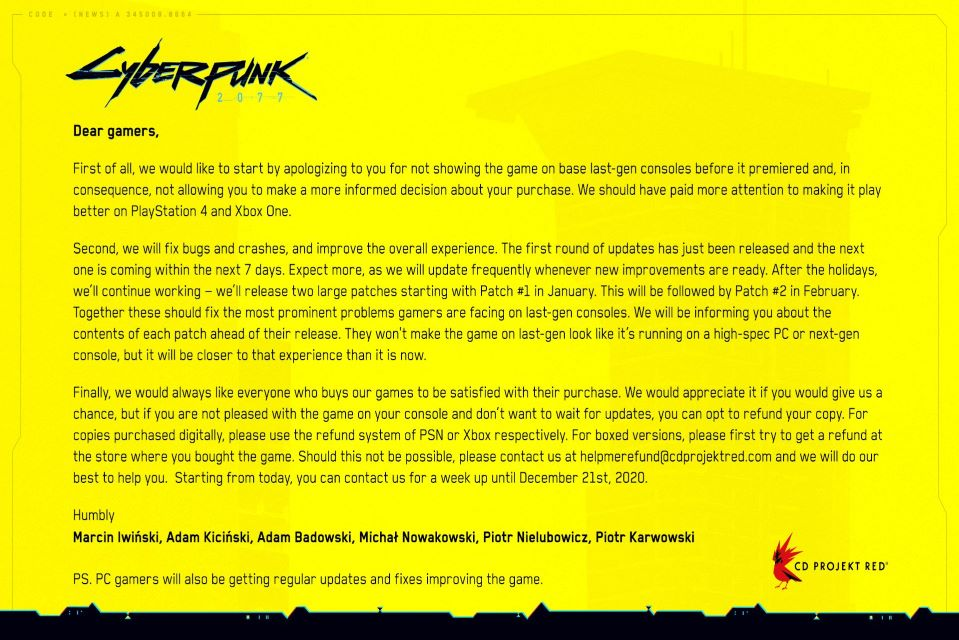

The long-awaited and long-delayed role-playing game “Cyberpunk 2077” has been so glitchy, that developer CD Projekt Red recommended earlier this week that dissatisfied customers unwilling to wait for a January update to fix the game should seek refunds — preferably through the retailer where they purchased the title.
The $60 game featuring Hollywood actor Keanu Reeves playing a character through voice and motion capture, as well as a cameo from Tesla TSLA, -1.20% CEO Elon Musk, was one of the most anticipated videogames in recent years, selling 8 million copies before it was released. It was originally scheduled to drop in April, but didn’t hit shelves until Dec. 10. Unfortunately, the repeated delays didn’t fix the bugs in the open-world sci-fi game, which suffered serious performance issues and glitches on both the PlayStation 4 and the Xbox One, as well as bugs on other platforms.
CD Projekt Red, best known for “The Witcher” videogame series that has been adapted into a show on Netflix NFLX, +1.16%, saw its shares plunge as much as 20% earlier this week off the bad reviews of the game’s flawed performance.
CD Projekt Red: The game developer urged customers to wait for the patches in January and February, which should improve the gaming experience. But it directs customers to request refunds directly from the places where they purchased the game — which is where things get dicey, since many retailers do not fully refund opened games that have been played already. CD Projekt Red says that if getting a refund from the original retailer doesn’t work, then to email them at helpmerefund@cdprojektred.com through December 21, and “we will do our best to help you.” PlayStation: Sony will now offer full refunds to those who bought “Cyberpunk 2077” on the PlayStation Store. Sign in to redeem your refund here. What’s more, the game is being removed from the PlayStation Store until further notice. Once the site has confirmed that you purchased “Cyberpunk 2077” through the PlayStation Store, it will begin processing your refund. It notes that the length of time it takes to get your money back may vary based on your payment method and financial institution. Xbox: Microsoft announced on Twitter on Friday that it is expanding its refund policy to offer full refunds to anyone who purchased the game digitally from the Microsoft store.
The executive suggested the team had been too preoccupied with optimizing the game for “PC and next-gen performance rather than current-gen,” and added, “We definitely did not spend enough time looking at that.” However, he denied there being any undue pressure to release the game when they did.
Comment Here